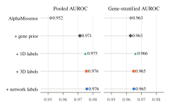
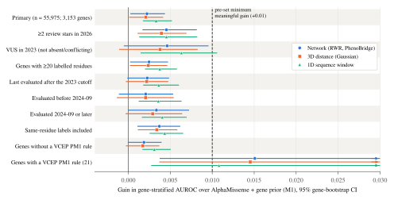
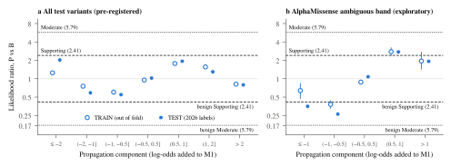

Background. Pathogenic missense variants cluster in protein structures, and ACMG/AMP criterion PM1 rewards variants in mutational hotspots. Several tools now score a variant by the classified variants around it, in sequence or on an AlphaFold model. It is not known whether this evidence adds to modern predictors such as AlphaMissense when it is used to classify variants that are genuinely unresolved, or whether three-dimensional neighbourhoods beat simple sequence windows.
Methods. In a plan committed before data assembly, we built a leakage-free temporal benchmark from ClinVar. Labels came from the January 2023 release (66,765 classified missense variants in 3,183 proteins). The test set was 55,975 variants in 3,153 genes that were uncertain, conflicting or absent in 2023 and classified pathogenic or benign by November 2026. For each test variant we summed the labels of other residues with three kernels: network propagation (random walk with restart, RWR) on the AlphaFold contact graph, a Gaussian kernel on 3D distance, and an exponential sequence window. We added these to logistic models containing AlphaMissense and a gene prior. The primary metric was gene-stratified AUROC, i.e. concordance over pathogenic–benign pairs within the same gene, with gene-cluster bootstrap inference. A positive finding required a Holm-significant gain of at least 0.01. Evidence strength was calibrated against ClinGen likelihood-ratio thresholds.
Results. AlphaMissense alone reached a gene-stratified AUROC of 0.963. Network propagation added 0.0022 (95% CI 0.0002–0.0044; Holm p = 0.078), a fifth of the pre-set minimum. 3D distance added 0.0021 and the sequence window 0.0033. Three-dimensional neighbourhoods were equivalent to sequence windows within ±0.005 and, if anything, slightly worse. No bin of the added evidence reached the ClinGen Supporting likelihood ratio of 2.41 (maximum 1.94 on test). These results held across ten sensitivity analyses and stratifications. The one exception was the 21 genes whose expert panels define PM1 hotspots (+0.015), where curation is partly circular. Pooled AUROC, the usual benchmark metric, rewarded a gene prior that does not change any within-gene ranking (+0.019). In an exploratory analysis of variants that AlphaMissense calls ambiguous, neighbour evidence approached but did not reach Supporting strength.
Conclusions. Once AlphaMissense is used, automated hotspot evidence from neighbouring classified variants is largely redundant, and AlphaFold geometry adds nothing over sequence position. Calibrated PP3 plus an automated PM1 risks double-counting. Benchmarks of variant-effect predictors should report within-gene metrics on temporally held-out variants.
Most missense variants seen in clinical sequencing are classified as variants of uncertain significance (VUS) under the ACMG/AMP framework [1]. Their resolution is slow, and it is one of the central problems of clinical genomics [2]. Computational predictors contribute through criteria PP3 and BP4. Since ClinGen calibrated predictor scores to likelihood-ratio evidence strengths [3], and later extended the calibration to AlphaMissense [4], a strong prediction can supply up to Strong evidence. AlphaMissense [5] combines protein language modelling with AlphaFold structure and population constraint. It is among the most accurate unsupervised predictors and is now widely used for PP3.
A second source of evidence is the position of a variant relative to variants that are already classified. Criterion PM1 credits a variant in "a mutational hot spot and/or critical and well-established functional domain" [1]. Pathogenic variants cluster in 3D far more often than one-dimensional analyses reveal [6]. This has led to tools that score a variant by its classified neighbours: DeMAG's "partners score" sums ClinVar labels within 11 Å on AlphaFold models [7]; PathProx and VUStruct measure 3D proximity to pathogenic and benign variants [8]; MutScore [9] and HCSeeker [10] use sequence-window label densities; and Bayesian penetrance-density models do so for cardiac channels [11]. Data-driven hotspot rules have been mapped to evidence strength for single diseases [12], and a genome-wide study found significant pathogenic 3D neighbourhoods in most proteins with enough labels [13].
Three questions about this evidence remain open. The first is whether it adds to AlphaMissense. AlphaMissense already sees structure and conservation, so neighbouring labels may duplicate it; ClinGen therefore caps PP3 plus PM1 at Strong [3]. The second is evaluation. Most label-based tools were tested with random or cross-validation splits and pooled AUROC. That design allows leakage of nearby labels and rewards learning which genes are dangerous rather than which variants are [14,15]. The third is whether structure matters at all, i.e. whether a 3D neighbourhood carries more information than a sequence window of the same size.
We answer these questions with a pre-registered benchmark designed to remove each problem. Labels come only from a past ClinVar release. Test variants are the ones that were later resolved. The baseline includes AlphaMissense and a gene prior. The primary metric compares variants only within genes. Evidence is calibrated against ClinGen thresholds. We built the benchmark around network propagation on AlphaFold contact graphs, the method of the PhenoBridge pipeline, and expected a positive result. The result was negative, and we report it as found.
The analysis plan (questions, data rules, kernels, models, hypotheses, metric and decision rule) was committed to the project repository before the dataset was assembled. Amendment 1 followed a literature review and was also made before any data were seen. It changed the primary metric from pooled to gene-stratified AUROC [15], added an equivalence margin for 3D versus sequence, fixed the calibration thresholds [3] and added two stratifications. Amendment 2 was made after the data were built and before any model was fit. It added a strict temporal sensitivity analysis. Deviations are listed in Section 2.8.
We used two ClinVar [16] variant_summary releases: January 2023 and 1 November 2026. Germline missense SNVs on GRCh38 with at least one review star were mapped to MANE Select transcripts [17] with Ensembl VEP [18] and to UniProt and AlphaFold numbering; the reference amino acid matched at all 124,398 mapped residues. Only proteins with a single-fragment AlphaFold v6 model [19] were used.
AlphaMissense scores [5] for the exact substitution covered 98.5–98.9% of variants. A residue took a TRAIN label if every TRAIN variant at it agreed; 120 of 59,613 labelled residues were mixed and were not used as label sources. The analysed TRAIN set had 66,765 variants (29,702 P, 37,063 B). The primary TEST set was the 55,975 variants (22,425 P, 33,550 B) in 3,153 genes with at least five other labelled residues (median 31). Of these, 82.9% were absent from ClinVar in 2023, 11.4% were VUS and 5.6% conflicting; 85% were last evaluated after the 2023 cutoff.
For a query residue q and a kernel wq(j), normalised so that Σj wq(j) = 1 over all residues, the pathogenic and benign label masses are
Labels at the query's own residue are excluded, because same-residue evidence is covered by PS1/PM5 rather than PM1. Models use log(m + 10−4). The three kernels were:
For TRAIN variants the features leave out the variant's own residue, so the model never sees a variant's label among its own predictors.
All models were logistic regressions fitted once on TRAIN and evaluated once on TEST.
Each kernel parameter was chosen by five-fold cross-validation on TRAIN, with folds grouped by gene. The selected values (α = 0.3, σ = 6 Å, λ = 5) coincided with the pre-specified defaults. Cross-validated TRAIN AUROC spanned only 0.9783–0.9792 across the eleven kernel settings, against 0.9763 for M1.
The primary metric was gene-stratified AUROC: the proportion of concordant pairs among all pathogenic–benign test pairs within the same gene, pooled over genes, with ties counted as one half. Equivalently, it is ΣgUg/ΣgnP,gnB,g for gene-level Mann–Whitney statistics Ug. A score that only ranks genes cannot improve it. Uncertainty came from a paired bootstrap over genes (2,000 resamples), with resampled genes kept as distinct strata. Because each Ug is fixed, a resample is a count-weighted sum over genes.
The hypotheses were:
Two-sided bootstrap p-values were Holm-corrected across H1–H3. A positive finding required H1 to be significant after correction and a gain of at least 0.01. Pooled AUROC, AUPRC, Brier score and the mean of per-gene AUROCs (genes with at least three P and three B) were secondary.
PP3 and PM1 together are capped at Strong [3], so hotspot evidence must be measured conditional on the predictor. We therefore calibrated the propagation component: the M2-RWR log-odds minus the M1 log-odds. On TRAIN, the component was computed out of fold (gene-grouped five-fold). In bins of the component we estimated the likelihood ratio LR = Pr(bin | P)/Pr(bin | B) on TRAIN and checked it on TEST. Thresholds followed the ClinGen point system [3,21], with prior 0.0441: Supporting 2.406, Moderate 5.790 and Strong 33.53, with reciprocals for benign evidence. A bin was to be assigned a strength only if the one-sided 95% bootstrap bound of its TRAIN LR cleared the threshold.
We repeated H1–H3 under the following variants of the design:
We also stratified by last evaluation before versus after September 2024 (AlphaMissense calibration for PP3 appeared in 2024 [4]) and by whether the gene has a ClinGen variant curation expert panel (VCEP) rule defining PM1 hotspots (21 genes, including PTEN, TP53, RASopathy genes, MYH7, MYBPC3, CDH1 and RUNX1 [22–24]).
Four points differ from the plan or needed correction:
The analysis of AlphaMissense-ambiguous variants (Section 3.5) was designed after the results were seen and is exploratory.
Within genes, AlphaMissense ranked the variant later classified pathogenic above the one later classified benign 96.3% of the time (Table 1). The mean per-gene AUROC over 721 genes with at least three of each class was 0.956. The gene prior raised pooled AUROC from 0.952 to 0.971 and lowered Brier score from 0.084 to 0.061. It changed gene-stratified AUROC by −0.0002, a change that comes only from leaving each variant's own residue out of the prior (Fig. 1). A model that learns gene base rates thus looks substantially better on the pooled metric without ranking a single within-gene pair differently, as recently argued for ClinVar benchmarks in general [15].

| Model | Strat. AUROC | Pooled AUROC | AUPRC | Brier |
|---|---|---|---|---|
| M0 AlphaMissense | 0.9629 | 0.9518 | 0.925 | 0.084 |
| M1 + gene prior | 0.9627 | 0.9712 | 0.959 | 0.061 |
| M2-1D sequence | 0.9660 | 0.9749 | 0.965 | 0.056 |
| M2-3D distance | 0.9648 | 0.9756 | 0.966 | 0.054 |
| M2-RWR network | 0.9649 | 0.9759 | 0.966 | 0.054 |
| Contrast | Δ | 95% CI | p | Holm |
| H1 RWR − M1 | +0.0022 | 0.0002, 0.0044 | 0.026 | 0.078 |
| H2 RWR − 3D | +0.0001 | −0.0005, 0.0007 | 0.62 | 0.62 |
| H3 RWR − 1D | −0.0011 | −0.0023, 0.0002 | 0.092 | 0.18 |
| 3D − M1 | +0.0021 | 0.0001, 0.0042 | 0.043 | – |
| 1D − M1 | +0.0033 | 0.0017, 0.0052 | <0.001 | – |
Network propagation of TRAIN labels raised gene-stratified AUROC by 0.0022 (95% CI 0.0002–0.0044; Table 1). This was nominally significant (p = 0.026) but not after Holm correction (p = 0.078), and it was a fifth of the pre-set minimum effect. H1 is therefore not supported.
The network kernel was indistinguishable from the Gaussian 3D kernel (H2: +0.0001, p = 0.62). Neither 3D kernel beat the sequence window: H3 was −0.0011, and its 90% CI lay inside the ±0.005 equivalence margin. The sequence window alone gave the largest gain (+0.0033, 95% CI 0.0017–0.0052). On TRAIN cross-validation all eleven kernel settings fell within 0.001 of each other. In this setting, whatever information neighbouring labels carry beyond AlphaMissense is already present in sequence position, and AlphaFold geometry does not add to it.
Gains did not grow with label density. Pooled AUROC gains were +0.005, +0.005, +0.006 and +0.004 in genes with 5–9, 10–19, 20–49 and ≥50 labelled residues.


The picture was the same in every sensitivity analysis (Fig. 2). Outside the VCEP-PM1 stratum described below, the H1 gain stayed below 0.005:
The sequence window was never worse than the 3D kernels. AlphaMissense's own performance was 0.956 among variants last evaluated before September 2024, when PP3 based on AlphaMissense was less likely to have entered classifications, and 0.968 afterwards. The propagation gain was no larger in the earlier stratum (+0.0021 vs +0.0034).
The one exception was the 21 genes with VCEP-defined PM1 hotspots (1,004 test variants). There network propagation added 0.015 (95% CI 0.004–0.054), and the network kernel beat the sequence window (+0.0043, 95% CI 0.0007–0.0155). This is the only place the pre-set effect size was reached. It is also where the outcome is least independent of the predictor: expert panels in these genes award PM1 for proximity to established pathogenic residues, so part of each 2026 classification was made from the same kind of evidence the score uses [14]. In the other 3,132 genes the gain was +0.0019.
The propagation component was well calibrated, with TRAIN and TEST likelihood ratios agreeing bin by bin, but it was weak (Fig. 3a). The highest likelihood ratio was 1.77 on TRAIN and 1.94 on TEST, in the bin where the component added 0.5–1 log-odds. That is below the Supporting threshold of 2.41. The lowest was 0.55 on TEST, which is not below the benign Supporting threshold of 0.416. No bin qualified for any evidence strength in either direction. Used on top of a calibrated AlphaMissense PP3, automated neighbour-label evidence would therefore not justify even PM1_Supporting in this benchmark.
Variants that stay VUS are often those for which predictors are indeterminate. We therefore examined, post hoc, the 3,620 test variants (1,165 genes) scored "ambiguous" by AlphaMissense (0.34–0.564 [5]). Here AlphaMissense ranked within-gene pairs at only 0.598. Neighbour labels added 0.067 (network; 95% CI −0.016 to 0.137), 0.062 (3D; −0.024 to 0.135) and 0.087 (sequence; 0.006 to 0.161). Sequence again matched or exceeded structure.
In calibration (Fig. 3b), one bin approached Supporting on both TRAIN (LR 2.78) and TEST (2.75). Its bootstrap 5th percentile of 2.37 fell just short of 2.406. In the benign direction, a bin with LR 0.38 on TRAIN and 0.26 on TEST had a 95th percentile of 0.44, just short of 0.416. Neighbour evidence may therefore have a narrow, clinically relevant role where AlphaMissense is uninformative. That role is not specific to structure, and this result needs confirmation in independent data.
We asked whether the classified variants surrounding a newly observed missense variant, on its AlphaFold structure, help predict how it will eventually be classified. The answer depends on the baseline. Against AlphaMissense plus a gene prior, evaluated within genes on variants resolved after the labels were frozen, the gain is about 0.002–0.004 in AUROC. It does not reach any ClinGen evidence strength. It is carried as well by a sequence window as by 3D distance or network propagation.
Relation to prior work. Earlier label-based tools reported large contributions from neighbouring labels. DeMAG's partners score was its most important feature [7], and MutScore improved on REVEL in a temporal test [9]. Those comparisons were against predictors without structural input and used pooled metrics. Our results do not contradict them. They show that the increment largely disappears once the comparator is AlphaMissense and the metric cannot reward gene base rates, in line with the small increments over AlphaMissense reported for structural penetrance priors in RYR2 [25]. The 3D clustering of pathogenic variants is real [6,13]. Most of the information it carries about an individual new variant appears to be captured by a predictor that already models structure, and by sequence position.
Why does 3D not beat sequence? We suggest three reasons, none tested here. First, most labelled residues near a query in 3D are also near it in sequence, within the same secondary-structure element or domain. Second, the extra long-range contacts that 3D adds are where AlphaFold's monomer models are least informative about interfaces. Third, curators reason from sequence-defined domains and hotspots, so labels themselves may cluster more in sequence. The one exception, the VCEP-PM1 genes, is where curators' hotspot rules most directly shape the labels, which suggests that curation rather than biology drives much of the neighbour signal there.
Clinical implications. ClinGen recommends capping PP3 plus PM1 at Strong because predictors already capture some hotspot information [3]. Our results quantify that overlap: conditional on AlphaMissense, automated hotspot evidence from classified neighbours is near-redundant across 3,153 genes. Laboratories that apply calibrated PP3 from AlphaMissense should be cautious about adding an automated PM1 from label density, whether in sequence or in 3D, outside panels that have calibrated a gene-specific rule. Neighbour evidence may help when AlphaMissense is indeterminate, but our data do not yet support assigning it a strength.
Benchmark design. Two features of our design changed conclusions. Pooled AUROC credited the gene prior with a 0.019 improvement that does not change any within-gene decision; gene-stratified metrics should be standard [15]. The temporal design avoids the leakage of nearby labels that random splits allow [14]. Applying it also showed how much of a "test" set is unresolved variants: only 11% of the test variants had been VUS in 2023, and most had no 2023 record at all.
Limitations.
In a pre-registered temporal benchmark of 55,975 resolved missense variants, the classified neighbours of a variant on its AlphaFold structure added little to AlphaMissense, reached no ClinGen evidence strength, and carried no information beyond what a sequence window provides. Network propagation on contact graphs was no better than simple 3D distance. Automated PM1-like evidence should be calibrated conditional on the predictor already in use, and variant-effect benchmarks should be evaluated within genes on temporally held-out variants.
All code, the pre-registration and its amendments, and all result tables are available at github.com/sparshsumani/phenoBridge:
Input data are public: ClinVar releases 2023-01 and 2026-11-01, AlphaMissense, AlphaFold DB v6, and MANE Select.
[To be completed by the authors.]
[To be completed by the authors.]